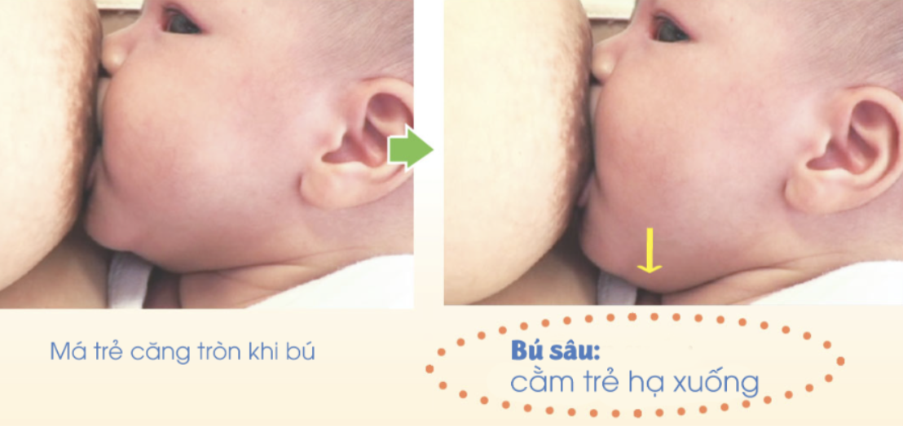

Cẩm nang thực hành lâm sàng giúp nuôi con bằng sữa mẹ hiệu quả
Ngậm bắt vú đúng cách (hay khớp ngậm chuẩn) là chìa khóa vàng quyết định sự thành bại của hành trình nuôi con bằng sữa mẹ. Khi trẻ có khớp ngậm đúng, dòng sữa sẽ được kích thích tiết ra đều đặn, trẻ bú được nhiều sữa nhất mà không tốn quá nhiều sức. Đồng thời giúp người mẹ tránh được hoàn toàn cảm giác đau rát, nứt cổ gà hay tắc tia sữa.
Việc không kịp thời phát hiện và hiệu chỉnh khớp ngậm sai sẽ ngay lập tức dẫn đến nhiều hệ lụy không mong muốn cho sức khỏe của cả mẹ và bé:
Trước khi đưa trẻ vào vú, mẹ cần tạo cho trẻ một phản xạ mở miệng tự nhiên bằng cách áp dụng quy trình kỹ thuật sau:
Để biết em bé đã đạt được khớp ngậm tối ưu hay chưa, các mẹ hãy quan sát kỹ 4 đặc điểm hình thái học bên ngoài dưới đây:
Khi ngậm bắt vú đúng, miệng của em bé sẽ mở rất rộng, ôm trọn lấy không chỉ núm vú mà là phần lớn quầng vú của mẹ. Điều này giúp lưỡi của bé đặt đúng vị trí dưới quầng vú để vắt sữa một cách cơ học.
Quan sát quầng bầu ngực của mẹ lúc bé đang bú: Phần quầng vú còn sót lại ở phía trên môi trên của trẻ phải nhiều hơn phần quầng vú còn lại ở phía dưới môi dưới. Đây gọi là kỹ thuật ngậm lệch tâm giúp bé bú sâu nhất.
Môi dưới của em bé không được bị cuốn vào trong mà phải loe rộng ra ngoài giống như "môi cá". Đồng thời, cằm của trẻ phải tì sát một cách vững chãi vào bầu ngực của người mẹ.

Khoảng cách giữa cằm của trẻ và bầu ngực mẹ gần như bằng không. Khi cằm trẻ tì sát, mũi trẻ sẽ tự động giữ được một khoảng thoáng khí nhỏ tự nhiên phía trên để thở mà không cần mẹ phải dùng tay ấn giữ ngực.
Mẹ thấy trẻ nút vú và nuốt sữa một cách chậm rãi, có khi nghe rõ tiếng nuốt sữa "ực ực". Má trẻ căng tròn, bầu ngực mềm hẳn sau khi bú, núm vú giữ nguyên hình dạng bình thường sau khi bé nhả và mẹ không hề thấy đau.
Ngược lại với tư thế trên, nếu quá trình cho bú xuất hiện các đặc điểm sau thì trẻ đã ngậm bắt vú sai lệch:
Trong trường hợp em bé ngậm chưa chuẩn hoặc khiến người mẹ có cảm giác đau buốt núm vú, mẹ không nên để bé tiếp tục bú cố mà cần ngắt khớp ngậm cũ để tập lại theo hướng dẫn lâm sàng sau:
Mẹ tuyệt đối không kéo mạnh em bé ra khỏi đầu ti vì sẽ gây tổn thương nghiêm trọng cho da núm vú. Hãy dùng ngón tay út (đã rửa sạch) đặt nhẹ nhàng vào góc miệng của trẻ để giải phóng áp lực chân không bên trong, sau đó nhẹ nhàng đẩy miệng trẻ ra khỏi núm vú và tiến hành tập cho trẻ ngậm bắt vú lại từ đầu.